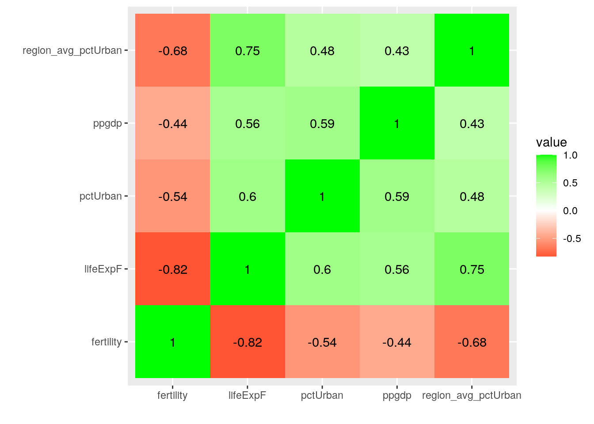
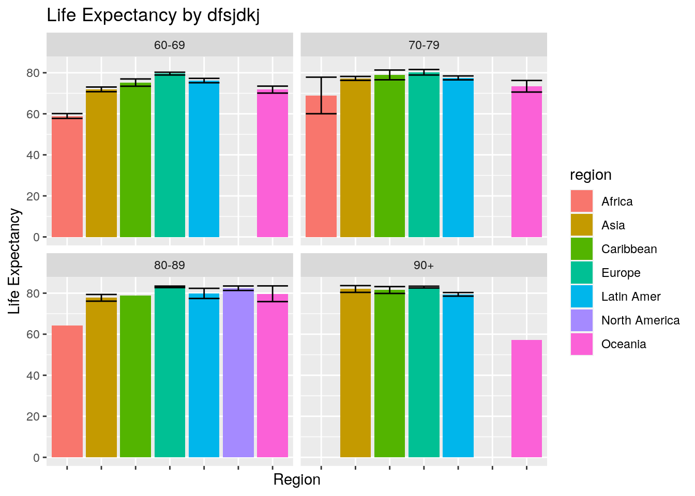
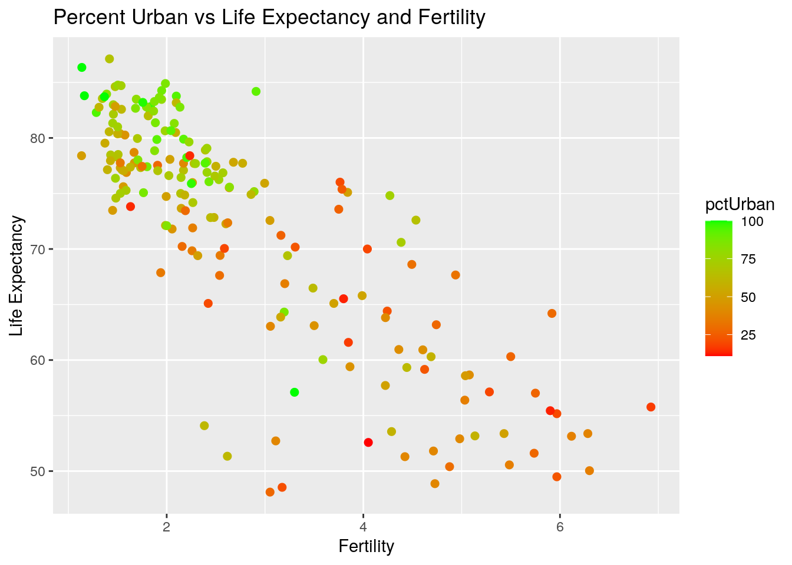
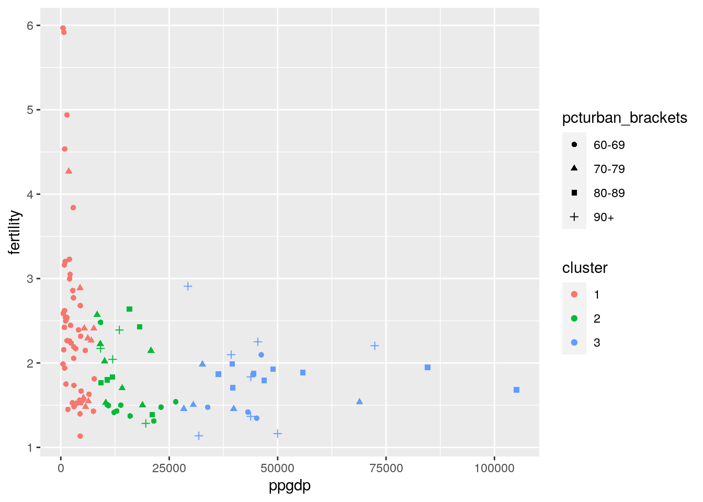

The two datasets I have chosen are artificially created from the larger United Nations (UN) dataset provided by R. This UN dataset details multiple social indicators for health, welfare, and education for 213 places (most of which are members of the UN). I acquired these data through the carsData, and they contain variables such as life expectancy, total fertility rate, infant mortality, percent urban, and per capita GDP in US dollars. I expect that with higher per capita GDP and percent urban, that life expectancy and total fertility rate will increase, while infant mortality will decrease. These data are interesting to me as I am a public health major interested in epidemiological trends across countries, and what we can learn from them to achieve better health for all.
library(carData)
library(dplyr)##
## Attaching package: 'dplyr'## The following objects are masked from 'package:stats':
##
## filter, lag## The following objects are masked from 'package:base':
##
## intersect, setdiff, setequal, unionlibrary(tidyverse)## ── Attaching packages ── tidyverse 1.3.0 ──## ✓ ggplot2 3.3.2 ✓ purrr 0.3.4
## ✓ tibble 3.0.3 ✓ stringr 1.4.0
## ✓ tidyr 1.1.1 ✓ forcats 0.5.0
## ✓ readr 1.3.1## ── Conflicts ───── tidyverse_conflicts() ──
## x dplyr::filter() masks stats::filter()
## x dplyr::lag() masks stats::lag()library(data.table)##
## Attaching package: 'data.table'## The following object is masked from 'package:purrr':
##
## transpose## The following objects are masked from 'package:dplyr':
##
## between, first, lastu = UN %>% na.omit()
setDT(u, keep.rownames = "country")
u1 = u %>% select(country, region, group, fertility, lifeExpF)
u2 = u %>% select(country, ppgdp, pctUrban)
u1 = u1 %>% pivot_wider(names_from = region, values_from = fertility)
u1 = u1 %>% pivot_longer(c(4:10), names_to = "region", values_to = "fertility") %>% na.omit()Since the datasets that I used were already tidy, I demonstrated my knowledge on pivoting datasets by pivoting "u1" wider by using the values from the region column as new column names. I used the values from the fertility column to be the values for these new variables. I then reversed this command by using the pivot_longer function to bring the new region columns back under a single "region" column, and then doing the same for the fertility values. Additionally, I omitted the NA values that were generated in these commands.
u_full = u1 %>% left_join(u2) #joining by country## Joining, by = "country"I used the left_join function to join the "u1" and "u2" datasets. The choice of join function was arbitrary, since all of the NA values were preliminarily omitted from the two datasets.
u_full = u_full %>% mutate_at(c("group"),as.character)
u_full = u_full %>% mutate(pcturban_brackets = case_when(pctUrban >= 90 ~ "90+", 80 <= pctUrban & pctUrban <= 89 ~ "80-89", 70 <= pctUrban & pctUrban <= 79 ~ "70-79", pctUrban <= 69 ~ "60-69"))
u_full = u_full %>% group_by(region) %>% mutate(region_avg_pctUrban = mean(pctUrban))
u_full %>% group_by(region) %>% summarise(mean(ppgdp))## `summarise()` ungrouping output (override with `.groups` argument)## # A tibble: 7 x 2
## region `mean(ppgdp)`
## <chr> <dbl>
## 1 Africa 2337.
## 2 Asia 11995.
## 3 Caribbean 12191.
## 4 Europe 27394.
## 5 Latin Amer 6303.
## 6 North America 46453.
## 7 Oceania 12066.u_full %>% select(country, lifeExpF, ppgdp) %>% filter (ppgdp > mean(ppgdp)) %>% group_by(country) %>% arrange(desc(ppgdp))## Adding missing grouping variables: `region`## # A tibble: 66 x 4
## # Groups: country [66]
## region country lifeExpF ppgdp
## <chr> <chr> <dbl> <dbl>
## 1 Europe Luxembourg 82.7 105095.
## 2 Europe Norway 83.5 84589.
## 3 Asia Qatar 78.2 72398.
## 4 Europe Switzerland 84.7 68880.
## 5 Oceania Australia 84.3 57119.
## 6 Europe Denmark 81.4 55830.
## 7 Asia Macao 83.8 49990.
## 8 Europe Sweden 83.6 48906.
## 9 Europe Netherlands 82.8 46910.
## 10 North America United States 81.3 46546.
## # … with 56 more rowsu_full = u_full %>% ungroup()Firstly, I changed the group variable to a character variable by using the mutate function. Then, I mutated again to add a new variable that denoted the pctUrban bracket that a certain country fell within. I then grouped the data by region and generated a variable of the average of percentUrban by region. I then calculated the mean per capita GDP for each region. Lastly, I generated a list of each country's life expectancy and per capita GDP, arranged in descending order by per capita GDP, including only the countries that had a per capita GDP that was above the mean per capita GDP. Lastly, I ungrouped my data to return it to its original state.
u_full %>% summarize_if(is.numeric, mean)## # A tibble: 1 x 5
## lifeExpF fertility ppgdp pctUrban region_avg_pctUrban
## <dbl> <dbl> <dbl> <dbl> <dbl>
## 1 72.1 2.78 12291. 57.1 57.1u_full %>% summarize_if(is.numeric, sd)## # A tibble: 1 x 5
## lifeExpF fertility ppgdp pctUrban region_avg_pctUrban
## <dbl> <dbl> <dbl> <dbl> <dbl>
## 1 10.2 1.35 17412. 23.1 11.0u_full %>% summarize_if(is.numeric, var)## # A tibble: 1 x 5
## lifeExpF fertility ppgdp pctUrban region_avg_pctUrban
## <dbl> <dbl> <dbl> <dbl> <dbl>
## 1 104. 1.83 303190837. 534. 121.u_full %>% summarize_if(is.numeric, min)## # A tibble: 1 x 5
## lifeExpF fertility ppgdp pctUrban region_avg_pctUrban
## <dbl> <dbl> <dbl> <dbl> <dbl>
## 1 48.1 1.13 115. 11 42.4u_full %>% summarize_if(is.numeric, max)## # A tibble: 1 x 5
## lifeExpF fertility ppgdp pctUrban region_avg_pctUrban
## <dbl> <dbl> <dbl> <dbl> <dbl>
## 1 87.1 6.92 105095. 100 82u_full %>% summarize_if(is.numeric, n_distinct)## # A tibble: 1 x 5
## lifeExpF fertility ppgdp pctUrban region_avg_pctUrban
## <int> <int> <int> <int> <int>
## 1 187 188 193 80 7u_full %>% filter(region == "Asia" | region == "Europe" | region == "Latin Amer" | region == "Caribbean") %>% group_by(region) %>% summarize_if(is.numeric,mean)## # A tibble: 4 x 6
## region lifeExpF fertility ppgdp pctUrban region_avg_pctUrban
## <chr> <dbl> <dbl> <dbl> <dbl> <dbl>
## 1 Asia 74.6 2.43 11995. 57.4 57.4
## 2 Caribbean 77.0 1.99 12191. 57.8 57.8
## 3 Europe 80.7 1.59 27394. 70.5 70.5
## 4 Latin Amer 77.4 2.43 6303. 70 70u_full %>% filter(region == "Asia" | region == "Europe" | region == "Latin Amer" | region == "Caribbean") %>% group_by(region) %>% summarize_if(is.numeric,min)## # A tibble: 4 x 6
## region lifeExpF fertility ppgdp pctUrban region_avg_pctUrban
## <chr> <dbl> <dbl> <dbl> <dbl> <dbl>
## 1 Asia 49.5 1.14 499 14 57.4
## 2 Caribbean 63.9 1.45 613. 14 57.8
## 3 Europe 73.5 1.13 1626. 48 70.5
## 4 Latin Amer 69.4 1.8 1132. 29 70u_full %>% filter(region == "Asia" | region == "Europe" | region == "Latin Amer" | region == "Caribbean") %>% group_by(region) %>% summarize_if(is.numeric,max)## # A tibble: 4 x 6
## region lifeExpF fertility ppgdp pctUrban region_avg_pctUrban
## <chr> <dbl> <dbl> <dbl> <dbl> <dbl>
## 1 Asia 87.1 5.97 72398. 100 57.4
## 2 Caribbean 83.2 3.16 26461 99 57.8
## 3 Europe 84.9 2.10 105095. 97 70.5
## 4 Latin Amer 82.4 3.84 13503. 94 70u_full %>% filter(region == "Asia" | region == "Europe" | region == "Latin Amer" | region == "Caribbean") %>% group_by(region) %>% summarize_if(is.numeric,sd)## # A tibble: 4 x 6
## region lifeExpF fertility ppgdp pctUrban region_avg_pctUrban
## <chr> <dbl> <dbl> <dbl> <dbl> <dbl>
## 1 Asia 6.47 1.06 16742. 25.1 0
## 2 Caribbean 4.74 0.456 8519. 25.1 0
## 3 Europe 3.12 0.231 23820. 13.1 0
## 4 Latin Amer 3.05 0.501 3775. 16.9 0I started my this section by generating multiple single statistic tables using the numeric variables in the data set to explore the values for mean, standard deviation, variance, minimum, maximum, and distinct number of observations. After, I conducted the same calculations, except this time I grouped by region to see how these statistics differed between certain regions, specifically looking at Asia, Caribbean, Europe, and Latin America.
u_full %>% select_if(is.numeric) %>% cor %>% as.data.frame %>% rownames_to_column %>% pivot_longer(-1) %>% ggplot(aes(rowname,name,fill=value)) +
geom_tile() +
geom_text(aes(label=round(value,2))) +
xlab("")+ylab("")+scale_fill_gradient2(low="red",high="green")
u_full %>% ggplot(aes(x = region, y = lifeExpF, fill = region)) +
geom_bar(stat="summary",fun.y="mean",position="dodge") +
geom_errorbar(stat="summary",position="dodge") +
facet_wrap(~pcturban_brackets) +
ggtitle("Life Expectancy by dfsjdkj") +
theme(axis.text.x = element_blank(), legend.position = "right") +
scale_y_continuous(labels=scales::label_number()) +
xlab("Region") +
ylab("Life Expectancy")## Warning: Ignoring unknown parameters: fun.y## No summary function supplied, defaulting to `mean_se()`
## No summary function supplied, defaulting to `mean_se()`
## No summary function supplied, defaulting to `mean_se()`
## No summary function supplied, defaulting to `mean_se()`
## No summary function supplied, defaulting to `mean_se()`
## No summary function supplied, defaulting to `mean_se()`
## No summary function supplied, defaulting to `mean_se()`
## No summary function supplied, defaulting to `mean_se()` This plot demonstrates the life expectancy value in years for each region in four different percent urban brackets. By faceting by percent urban, it is clear that percent urban affects each region differently, with Africa maintaining lower life expectancy values than the other regions regardless of percent urban. Additionally, Oceania significantly dropped in life expectancy in the 90+ percent urban bracket, most likely alluding to other factors at play.
u_full %>% ggplot(aes(fertility, lifeExpF)) +
geom_point(size=2,aes(color=pctUrban)) +
scale_color_gradient(low="red",high="green") +
ggtitle("Percent Urban vs Life Expectancy and Fertility") +
xlab("Fertility") +
ylab("Life Expectancy")  This plot demonstrates the relationship between the percent urban, life expectancy, and fertility values for the countries in the data set. The data shows that higher percent urban is associated with higher life expectancy and lower fertility, while lower percent urban is generally associated with lower life expectancy and lower fertility.
library(cluster)
three_regions = u_full %>% filter(region == "Asia" | region == "Europe" | region == "Latin Amer")
pam1 = three_regions %>% pam(k=3)## Warning in data.matrix(x): NAs introduced by coercion
## Warning in data.matrix(x): NAs introduced by coercion
## Warning in data.matrix(x): NAs introduced by coercion
## Warning in data.matrix(x): NAs introduced by coercionpamcluster = three_regions %>% mutate(cluster=as.factor(pam1$cluster))
pamcluster %>% ggplot(aes(ppgdp,fertility,color=cluster,shape=pcturban_brackets)) +
geom_point()
I filtered my data by three different regions: Asia, Europe, and Latin America. I did this to see if PAM could separate these regions into separate clusters. I then ran PAM for three clusters on this filtered dataset. Then, I created the "pamcluster" dataset which was just pam1 with an additional column that showed which cluster each observation was a part of. Lastly, I generated a plot of "pamcluster" using geom_point as well as the variables of fertilty and per capita GDP. Each cluster had its own color, and each percent urban bracket had its own shape. It seems that the clustering was correctly generated.